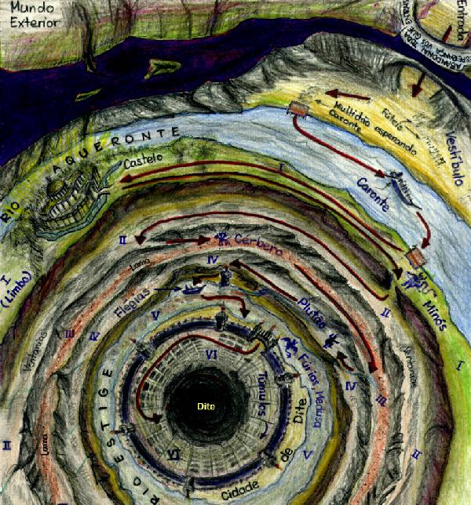

Canto IX
Erínias e Medusa
Círculo da heresia (6) - Túmulos
O medo me tomou quando vi o semblante
do mestre, que se aproximava, e dizia quase para si:
- Precisamos triunfar, se não... Mas não, ora! A ajuda
nos fora prometida! Como demora!
Eu vi muito bem como ele mudou de tom ao tentar encobrir
o que falara, ou a palavra que não havia pronunciado, por isso mais medo
tive ainda, pois a frase que ele deixara incompleta, eu completei com
sentido pior.
- Alguma vez já desceu, a estes círculos profundos do inferno, alguém
do Limbo? - perguntei-lhe.
- Isto é raro - respondeu-me o mestre -, mas é verdade que eu mesmo já
fiz esta viagem e desci até o círculo mais profundo, quando uma vez fui
convocado. Não se preocupe, pois conheço bem o caminho.
Virgílio continuou a falar, mas, de repente, minha atenção se voltou
para o céu onde vi três Fúrias infernais. Eram figuras femininas, ungidas
de sangue e com serpentes ferozes no lugar dos cabelos. O mestre, que
já conhecia as escravas de Proserpina,
me apontou:
- Olha! São as Erínias ferozes! Aquela
é Megera, à esquerda, e aquela que chora à direita é Aleto. Tesífone é
a do meio.
Elas gritavam alto e com as unhas rasgavam o peito. Eu fui para junto
do poeta, tomado pelo medo.
- Vem Medusa, vem! - gritavam - vamos
transformá-lo em pedra! Que pena que deixamos Teseu
escapar!
- Fecha os olhos e volta-te! - gritou Virgílio - pois se a górgona vier
e tu olhares para ela, não haverá mais volta ao mundo! - e com estas palavras
ele me virou de costas e, não confiando nas minhas mãos que já estavam
sobre os olhos, colocou as dele sobre as minhas e lá as manteve.
De repente, ouvi um grande estrondo e uma ventania tomou conta do ar
levantando poeira e fazendo um barulho assustador. Depois, o inferno começou
a tremer. Ele então tirou as mãos dos meus olhos e disse:
- Agora vira-te e olha na direção do pântano, onde a bruma é mais espessa.
Olhei e vi mais de mil almas apavoradas no ar, fugindo, saindo do caminho
de um ser que vinha, caminhando sobre o Estige, sem molhar os pés. Ele
afastava o ar sujo com as mãos, e essa aparentava ser a única coisa que
o incomodava. Eu tinha certeza, agora, que ele vinha do céu. Voltei-me
para o guia mas ele fez um sinal para que eu permanecesse em silêncio.
O anjo chegou e tocou as portas de Dite com uma pequena vara, fazendo
com que elas abrissem sem esforço.
- Ó almas mesquinhas - ele começou, sobre as portas da cidade sombria
- por que resistis contra aquela vontade que nunca pode ser negada e que,
mais de uma vez, só fez aumentar vosso sofrimento?
Depois de falar, voltou pelo mesmo caminho por onde tinha chegado. Nós
depois prosseguimos, seguros por suas palavras sagradas, e entramos sem
dificuldades pela porta principal.
|  |
| Mapa do Inferno
superior (do portal de entrada até a cidade de Dite - círculos
I a VI). Ilustração de Helder da Rocha. |
Já dentro da cidade, encontramos um cemitério de tumbas abertas, de onde
se ouvia o lamentar de muitas vozes que queimavam em brasa dentro das
covas.
- Mestre - perguntei -, que sombras são estas que aqui jazem e que só
podemos perceber pelos seus lamentos?
- São os hereges e seus seguidores. - respondeu-me Virgílio - Em cada
tumba repousam os réus de uma mesma seita, que são torturados pelo fogo
eterno.
Dobramos, então, à direita, e continuamos a caminhar entre a muralha
da cidade e as sepulturas.
|